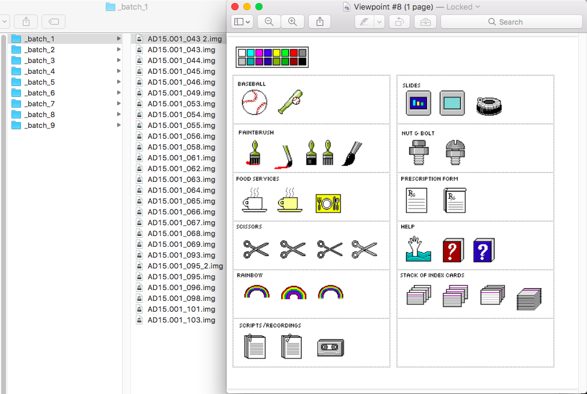
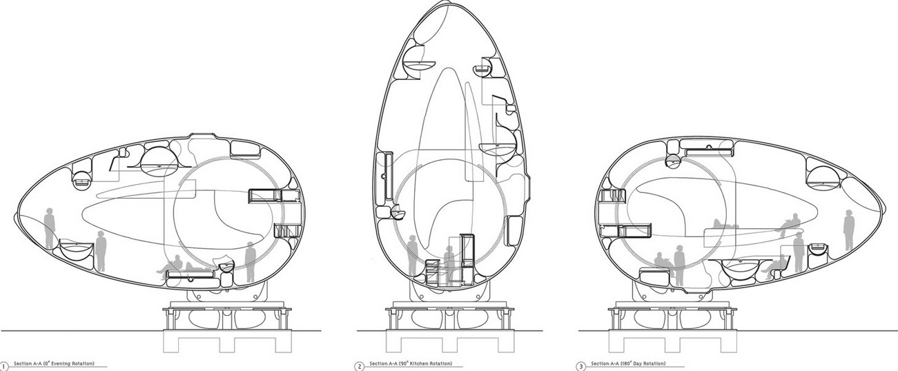
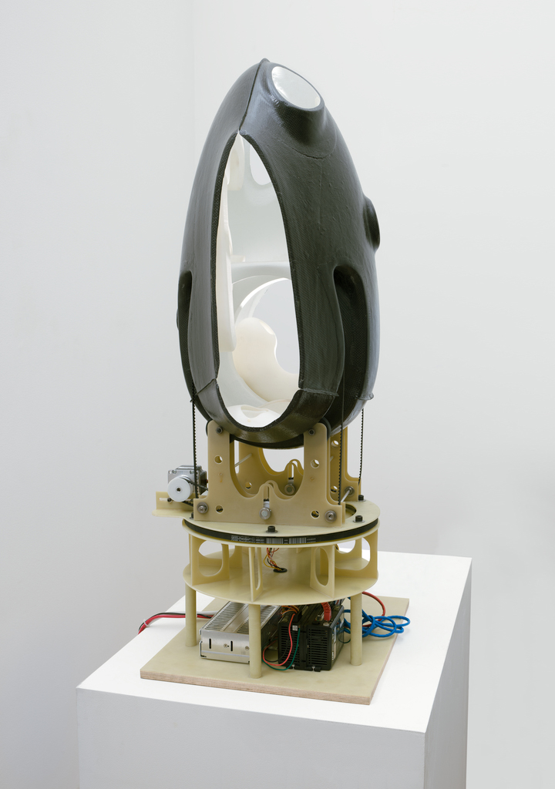

Engaging Computer Art: What is found there?
Engaging Computer Art: What is found there?
Engaging Computer Art: What is found there?
Engaging Computer Art: What is found there?
Engaging Computer Art: What is found there?
Hi, Thanks for having me today, it's a great honor and a pleasure to be here. My talk is called Engaging Computer Art: What is found there?
We have a great team at SFMoMA called team media composed of conservation, collections, curatorial, installation and more. I proposed a code migration of Ruby and through critical dialog and the question was raised why not emulation? We are working on
plan to evaluate both starting soon, and of course we will be working closely with the artist. Stay tuned!
Selected Convervation Projects
Selected Convervation Projects
Selected Convervation Projects
Selected Convervation Projects
I'd like to share some projects I've been working on at SFMoMA. These 3 works that span the collections of Media Art, Architecture and design.
Susan Kare And Her Macintosh Icons
Susan Kare is a prolific influential artist and graphic designer who created many of the interface elements and icons for the Apple Macintosh in the 1980s. Such as the Happy Mac.
And the trashcan icon which you may have encountered.
She also designed the solitaire interface for MS windows.
In 2015 She made a joint gift of her sketchbooks to 2 museums SFMoMA and MoMA.
In addition to the sketch books was a box of 300 floppy disks.
We got super excited about this but also knew that were going to be some barriers to access. 3-1/4 floppies are obsolete media. The filesystems on these disks might not be readable anymore and we might not have the original programs they were created
with.
KryoFlux is a hardware and software solution for preserving software on floppy disks. It was developed by the Software Preservation Society.
KryoFlux is a hardware and software solution for preserving software on floppy disks. It was developed by the Software Preservation Society. Classic Amiga Preservation Society (CAPS), dedicates itself to the preservation of software for the future, namely
classic games.
This is the kryoflux software interface for reading the disks. It helps detect read errors, corruption and failitated makind an image of the disk

So a good percentage of these files opened fine on a modern operating system and we could read the files.
But some did not like this one.
At first we assumed that these disks were corrupt. But my colleague at MoMA, Ben Fino Radin tried opening them in MinivMAC a macintosh 128k emulator and they opened! It turns out they were formatted in the MFS file system which Apple dropped support for
in OS8
Next we found that a number of the files were created ina a program called Studio8 by Electronic Arts. We scoured the web looking for the software but only found this reference in an old computer magazine.
Evetually we found Studio8 in one of the disk images, but it constantly crashed.
Eventually we tried opening the files in Photoshop 1.0 and that worked fine!
We also started discovering may of them were in color.
We also started discovering may of them were in color.
So at this point we had tackled a number of barriers. The question now was how to give easy access to the curators in a standardized way across institutions. So we built a linux based server together that ran the emulator in a web-browser. Each institution
worked with IT to deploy this server on their local network. The curators simply had to go to a url, login and load the files in photoshop 1. We did write a manual on the basics of photoshop 1. We also had a standard numbering system
for the disk images indexed in a spreadsheet so that notes could be compared across institutions.
Much like we have Team Media for Media Art we also have Team AD. And held a study day in the Museums mock up galleries.
Some of the topics that arise here are the modalities of display. In this session we considered among many things on how the icons should be presented. There is an original Mac 128k that is an exhibtion copy and an emulator running on a Raspberry Pi for
example
Emigre Magazine
Emigre was a graphic design magazine published by Emigre Graphics between 1984 and 2005; it was first published in 1984 in San Francisco, California, United States. Art-directed by Rudy VanderLans using fonts designed by his wife, Zuzana Licko, Emigre
was one of the first publications to use Macintosh computers and had a large influence on graphic designers moving into desktop publishing (DTP). Its variety of layouts, use of guest designers, and opinionated articles also had an
effect on other design publications.
This came on floppy as well
HyperCard is application software and a programming tool for Apple Macintosh and Apple IIGS computers. It is among the first successful hypermedia systems before the World Wide Web. It combines database abilities with a graphical, flexible, user-modifiable
interface.[2] HyperCard also features HyperTalk, a programming language for manipulating data and the user interface.
Here's the recovered presentation
HyperCard is application software and a programming tool for Apple Macintosh and Apple IIGS computers. It is among the first successful hypermedia systems before the World Wide Web. It combines database abilities with a graphical, flexible, user-modifiable
interface.[2] HyperCard also features HyperTalk, a programming language for manipulating data and the user interface.
Greg Lynn, Scale model for RV Prototype 2012
GREG LYNN was an innovator in redefining the medium of design with digital technology as well as pioneering the fabrication and manufacture of complex functional and ergonomic forms using CNC machinery. The buildings, projects, publications, teachings
and writings associated with his office have been influential in the acceptance and use of advanced materials and technologies for design and fabrication.
RV Prototype House is a 1/5th scale model of a house that increases living space by rotating in two axes on a robotic base. In addition to a floor in one orientation, one wall and the ceiling surface can be rotated as new floors. 150m of living surface
is realized within a 60m footprint. Made of a lightweight cored carbon fiber fabric the entire shell weighs less than 50 kilos allowing it to rotate freely.
The RV prototype came as a 1/5 scale model and a 1/20 scale model. The clip we just watched was the 1/5 scale model and this is an image of the 1/20 scale model which was acquired by SFMoMA in 2015.

The shell was constructed of a carbon fiber shell that had been cast in a CNC'd mold. In the interior was furniture that was 3d-printed and was gimballed so that it was always in balance with the rotation of the house.
The shell sits on top of a fiberglass base that contains gearing, timing belts and 2 NEMA 23 stepper motors tht control the pan and tilt.
This is the stepper driver an ST5-Q-EN, there were 2 of these one for each motor. It has a cpu, network connectivity and memory to store 744 commands along with a lot of other functionality.
Sequence 1 tilt
LABEL1
VE 0.1167 // Velocity set to 0.1167 (m/s?).
SP 0 // Set Absolute Position to 0 (=Zero Position).
FP -73000 // Feed to Position, move to position -73000.
//This tilts the shell 90 degrees in one direction (from it's starting point).
WT 3.00 // Wait for 3 seconds.
FP 0 // Feed to Position, move to position 0.
//This tilts the shell back up to the zero position.
WT 3.00 // Wait for 3 seconds.
FP 73000 // Feed to Position, move to position 73000.
//This tilts the shell 90 degrees in the other direction (from it's starting point).
WT 3.00 // Wait for 3 seconds.
FP 0 // Feed to Position, move to position 0.
//This tilts the shell back up to the zero position.
WT 3.00 // Wait for 3 seconds.
QG #LABEL1 // Queue Goto, loops the sequence from LABEL1.
There are number of demo programs loaded onto the controllers here is ond of the basic tilt programs written by Lynn's studio which was commented by conservator Martina Haidvogl.
In addition a tablet app was developed using an application called TouchOSC which allows for manual control over a wireless network at the table has no ethernet. It can also put send the back into demo mode.
OSC stands for Open Sound Control, It was developed and the Center for New Music and Technology at U.C. Berkeley. It is a fast networked data protocol and it was wonderful to see it used here. The tablet app would send OSC data to a client written in
an language called python on a laptop included with the work which wouls the pass the command onto the stepper motor driversIt's also interesting me to consider the documentation of the protocols of that are used in these systems in
addition to the code and components because it is how the system communicates.
Teiji Furuhashi: Lovers
Lovers is an immersive, room-sized multimedia installation by Japanese artist Teiji Furuhashi (1960–1995). Life-sized images of the artist and other fellow members of the Kyoto-based artist collective Dumb Type are projected onto the walls of a darkened
room from a tower of computer-controlled video and slide projectors at its center. The figures move like specters around the perimeter of the space, in a looped choreographic sequence made variable by a visitor-activated motion sensor,
which intervenes to restart one of the projections when triggered. Confined to their autonomous projections, these eponymous “lovers” overlap at moments within the sequence, whether running past each other or pausing in a gesture of
embrace, yet their bodies never make contact. Made just one year before Furuhashi’s death from AIDS-related illness, Lovers speaks to what the artist has described as “the theme of contemporary love in an ultra-romantic way.” Presented
for the first time since its inaugural exhibition at MoMA in 1995, the installation showcases the results of an extensive conservation effort recently completed by the Museum’s media conservators.
Lynn Hershman Leeson, Agent Ruby 1999
The first is Agent Ruby by Lynn Hershman Leeson, which I've been working on since 2009, In 2001–2 SFMOMA commissioned Agent Ruby (agentruby.sfmoma.org) by acclaimed San Francisco artist Lynn Hershman Leeson for its pioneering online platform e.space.An
artificial intelligent web avatar that is shaped by and reflective of encounters and adventures that it has with users.
Agent Ruby was conceived as an “e-dream portal,” a new experience in expanded cinema originating from the character Ruby (played by Tilda Swinton) in Hershman Leeson’s 2002 feature film Teknolust.
Ruby technical diagram
I wasked asked by the museum to help with conservation and care efforts for Ruby and we began with process of documentation.In documenting ruby we found a complex system of components communicating with each other. There were two servers running one that
served the public facing interface, and another that facilitated the dialog between the user and an AI interpreter.
There was the public facing interface, that was created in Macromedia flash at the time(now Adobe)
And the there was the brain or personality which consisted of over 22,000 entries written Artifical Intelligence Markup Language or AIML
The XML dialect called AIML was developed by Dr Richard Wallace and a worldwide free software community. AIML formed the basis for what was a bot called "A.L.I.C.E.." ("Artificial Linguistic Internet Computer Entity"), which won the annual Loebner Prize
Competition in Artificial Intelligence three times. It was in this language that you could craft an AI bot in and that is what rubys personality was created in.
In addition to a set of AIML a program to interpret it was needed. In Ruby case is was a program called Program D. This program took the users input matched againsta patterns in the AIML and returned a response.
And there was also the the orginal hardware(the biege PC on the left) which had been running continously on the internet for 8 or so years. And so in 2009 after documenting the work. The hardware was identified as one of the biggest risks of failure.
So our focus at that time was to migrate the software to a system known as as a virtual server.
During that process we found some intersting artifacts such as an alternate interface which more resembled the one in the film teknolust. Also there was 3d model and snippet of unused code that hinted at a animated 3d avatar, which can be seen in some
of Lynn's later works like DiNA
And there there was the 8 gigabyte log file of all the converstations that Ruby had ever had with visitors. While these components were excited they were not considered essentail to the artwork at the time.
So Ruby beacame stabilized, we successfully migrated the software away from the aging hardware secured the server and whe was running fine.We even presented the work here at the DOCAM summit in 2010. And then in 2013 Rudolf Frieling curator of Media arts
at SFMoMA wanted to display Ruby. He was quite interested in the log files and wanted me to print them out.
"That's like 8 truckloads of paper I said, I don't know if that is going to fly in ecological San Francisco. So we ended up writing python scripts to mine conversations based on topics designeted by the curator like 'science fiction and feminism. It was
then shown as the Agent Ruby files in 2013. It has been shown this way ever since including at Lynn's Retrospective at ZKM in 2014"
In 2009 we also called out vulnerabilities in Java and Flash
This December, Chrome 55 will make HTML5 the default experience, except for sites which only support Flash. For those, you’ll be prompted to enable Flash
Google annouced it will start phasing
when you first visit the site.
Artist Collaborations
Artist Collaborations
Artist Collaborations
Artist Collaborations
Teaching
Teaching
Teaching
Teaching
Teaching
Thank You!
Thank You!
Thank You!
Thank You!
Thank You!